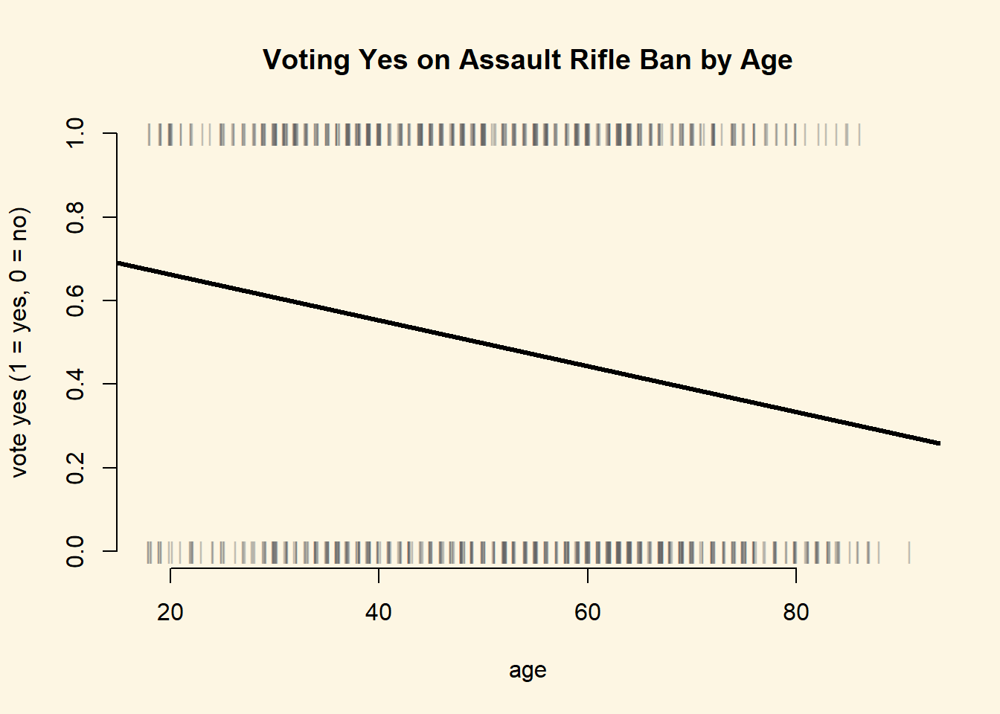

11.2 Solutions
11.2.0.1 Exercise 1
Create plots of age vs VoteYes and LeftRight vs VoteYes. Add a regression line (from a linear probability model) to the plots.
Here, we use the jitter() function to offset the observations on the x-axis a little bit. This helps us to better see the amount of observations that we have at each level of age. Furthermore, instead of plotting dots, we plot vertical bars for the same reason.
plot(
x = jitter(swiss$age,1),
y = swiss$VoteYes,
pch = "|", bty = "n",
col = rgb(green = 100, blue = 100, red = 100, alpha = 100, maxColorValue = 255),
xlab = "age", ylab = "vote yes (1 = yes, 0 = no)",
main = "Voting Yes on Assault Rifle Ban by Age"
)
abline( lm(VoteYes ~ age, data = swiss), lwd = 3 )
plot(
x = jitter(swiss$LeftRight,1),
y = swiss$VoteYes,
pch = "|", bty = "n",
col = rgb(green = 100, blue = 100, red = 100, alpha = 100, maxColorValue = 255),
xlab = "Left-Right Self Placement", ylab = "vote yes (1 = yes, 0 = no)",
main = "Voting Yes on Assault Rifle Ban by Ideology"
)
abline( lm(VoteYes ~ LeftRight, data = swiss), lwd = 3 )
11.2.0.2 Exercise 2
Estimate a model which includes age and LeftRight as predictors, and VoteYes as the dependent variable.
m1 <- glm(VoteYes ~ age + LeftRight, data = swiss, family = binomial(link="logit"))
library(texreg)
screenreg(m1)
===========================
Model 1
---------------------------
(Intercept) 5.01 ***
(0.42)
age -0.02 ***
(0.01)
LeftRight -0.81 ***
(0.06)
---------------------------
AIC 935.71
BIC 950.13
Log Likelihood -464.86
Deviance 929.71
Num. obs. 902
===========================
*** p < 0.001, ** p < 0.01, * p < 0.0511.2.0.3 Exercise 3
What is the effect of a one-unit increase in LeftRight on VoteYes? Discuss in terms of odds-ratios.
# left-right
exp(coef(m1)[["LeftRight"]])[1] 0.4443931Conservatives are less likely to vote in favour of the ban. The odds ratio of voting for the assault rifle ban decreases by 56% when we move 1 unit into the conservative direction of the ideology measure.
11.2.0.4 Exercise 4
What is the effect of a one-unit increase in age on VoteYes? Discuss in terms of odds-ratios.
# age
exp(coef(m1)[["age"]])[1] 0.9807587Voting yes on the ban also becomes less likely with increasing age. For each additional year the odds ratio of voting yes decrase by 2%.
11.2.0.5 Exercise 5
What is the effect on the probability of a yes vote of moving from a left-right self placement of 5 to a self placement of 6 for an individual who is 44 years old?
# predicted probability of yes-vote for left-right 5 and age 44
s1 <- predict(m1, newdata = data.frame(age = 44, LeftRight = 5), type = "response")
s1 1
0.5259904 # predicted probability of yes-vote for left-right 6 and age 44
s2 <- predict(m1, newdata = data.frame(age = 44, LeftRight = 6), type = "response")
s2 1
0.3302643 # first differences
s1 - s2 1
0.1957262 The probability of voting in favour decreases by 20 percentage points from 53% to 33%. Assuming a treshold of 0.5, we would predict that the 44 years old respondent who is at 5 on the ideology scale would for the ban. The respondent who is of the same age but at 6 on the ideology scale would vote against the ban.
11.2.0.6 Exercise 6
Calculate and plot the predicted probability of voting yes across the range of the age variable for individuals who have a left-right self placement of 5. Do the same across the range of the LeftRight variable for individuals with an age of 50.
# age range
s3 <- predict(m1, newdata = data.frame(age = seq(min(swiss$age), max(swiss$age), length.out = 100),
LeftRight = 5), type = "response" )
plot(
x = jitter(swiss$age[swiss$LeftRight==5],1),
y = swiss$VoteYes[swiss$LeftRight==5],
pch = "|", bty = "n",
col = rgb(green = 100, blue = 100, red = 100, alpha = 100, maxColorValue = 255),
xlab = "age", ylab = "vote yes (1 = yes, 0 = no)",
main = "Voting Yes on Assault Rifle Ban by Age"
)
abline(h=.5, lty = "dotted", lwd = 3)
text(x = 80, y= .50, pos = 3, "cutoff pi = .5")
lines(x = seq(min(swiss$age), max(swiss$age), length.out = 100),
y = s3, lwd = 3)
# max prediction
max(s3)[1] 0.6477591# min prediction
min(s3)[1] 0.308083We predict that the probability of voting for the ban decreases with age for a respondent with centrist ideology (left-right = 5) from 65% to 31%. This is a substantial effect.
# left-right range
s4 <- predict(m1, newdata = data.frame(age = 50,
LeftRight = seq(min(swiss$LeftRight, na.rm = TRUE),
max(swiss$LeftRight, na.rm = TRUE),
length.out = 100)), type = "response" )
plot(
x= jitter(swiss$LeftRight[swiss$age==50],1),
y = swiss$VoteYes[swiss$age==50],
pch = "|", bty = "n",
col = rgb(green = 100, blue = 100, red = 100, alpha = 150, maxColorValue = 255),
xlab = "Left-Right Self Placement",
ylab = "Predicted Probability of Yes-Vote",
main = "Effect of Ideology for Fifty Year Olds"
)
abline(h=.5, lty = "dotted", lwd = 3)
text(x = 8, y= .50, pos = 3, "cutoff pi = .5")
lines(x = seq(min(swiss$LeftRight, na.rm = TRUE),
max(swiss$LeftRight, na.rm = TRUE),
length.out = 100),
y = s4, lwd = 3)# max prediction
max(s4)[1] 0.9827529# min prediction
min(s4)[1] 0.03708689We predict that the probability of voting for the ban decreases the more conservative the respondent. For a 50 year old respondent, who is on the extreme left of the ideology scale, we predict a 98% probability of voting yes. The predicted probability of voting in favour decreases rapidly the more conservative the respondent, to 4% at the extreme right of the scale.
11.2.0.7 Exercise 7
We include university, german, and urban in our model.
We conjecture that repsondents who are university educated are more liberal in general and more in favour of gun control specifically. University classes, especially those on statistics, teach that gun laws are beneficial for society as a whole in the sense that freely available guns do not prevent crime but are potentially harmful. Furthermore, we control for the cultural language divide in Switzerland, where the German speaking areas are potentially more conservative and more in favour of liberal gun laws. We control for urbanization because we suspect that rural areas are more status quo oriented, whereas urban areas favour tighter regulation of guns.
m2 <- glm(VoteYes ~ age + LeftRight + university + german + urban, data = swiss, family = binomial(link="logit"))
screenreg(list(m1, m2))
========================================
Model 1 Model 2
----------------------------------------
(Intercept) 5.01 *** 4.64 ***
(0.42) (0.44)
age -0.02 *** -0.02 ***
(0.01) (0.01)
LeftRight -0.81 *** -0.80 ***
(0.06) (0.06)
university 0.67 ***
(0.19)
german -0.12
(0.17)
urban 0.42 *
(0.18)
----------------------------------------
AIC 935.71 917.79
BIC 950.13 946.61
Log Likelihood -464.86 -452.90
Deviance 929.71 905.79
Num. obs. 902 901
========================================
*** p < 0.001, ** p < 0.01, * p < 0.0511.2.0.8 Exercise 8
The effect of german in our new model is a statistical zero. As expected, university educated respondents are more in favour of the assault rifle regulation. Similarly, the more urban the canton, the respondent lives in, the more likely the respondent is to be in favour of the regulation.
Comparing our two models, we conclude that none of the new variables were confounding the effects of age and ideology. The effects of age and ideology are substantially unchanged.
We illustrate the effect of higher education and urbanisation in a plot. We vary urbanization from its minimum to its maximum. We plot two lines one for respondents with higher education and one for respondents without university education. We will keep constant age, LeftRight, and german and the appropriate measures of central tendency.
# newdata with no uni degree
X1 <- data.frame(
age = mean(swiss$age),
LeftRight = mean(swiss$LeftRight, na.rm = TRUE),
university = 0,
german = median(swiss$german),
urban = seq(min(swiss$urban), max(swiss$urban),length.out = 100)
)
# newdata with uni degree
X2 <- data.frame(
age = mean(swiss$age),
LeftRight = mean(swiss$LeftRight, na.rm = TRUE),
university = 1,
german = median(swiss$german),
urban = seq(min(swiss$urban), max(swiss$urban),length.out = 100)
)
# no university degree
X1$pp <- predict(m2, newdata = X1, type = "response")
# got uni degree
X2$pp <- predict(m2, newdata = X2, type = "response")
# plot
plot(
x = X1$urban,
y = X1$pp,
type = "l",
ylim = c(0,1),
main = "Effects of Urbanisation and Higher Education on Yes-Vote",
xlab = "Share of citizens in canton living in urban areas",
ylab = "Predicted Probability of Yes-Vote",
lwd = 3,
frame.plot = FALSE
)
abline(h=.5, lty = "dotted", lwd = 3)
text(x = .8, y= .50, pos = 1, "cutoff pi = .5")
# add university education
lines(X2$urban, X2$pp, lwd = 3, col = 2)# no uni degree predictions
range(X1$pp)[1] 0.4376645 0.5421051# uni degree predictions
range(X2$pp)[1] 0.6040835 0.6988812We show the effects of urbanisation and higher education for a centrist respondent with mean age (49), from the German speaking part of Switzerland. An average respondent such as this without a university degree living in the most rural part of Switzerland is predicted to vote yes with 44/% probabilty. The same respondent with higher education is predicted to vote yes with probability 60%. At the other extreme end of urbanization the predicted probability of a yes-vote for a respondent without higher education is 54%. The respondent with a university degree is predicted to vote yes with 70% probability.